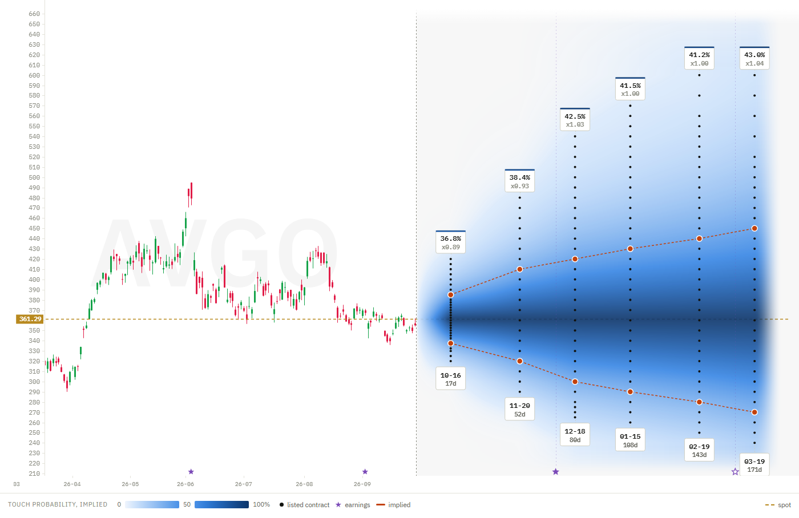
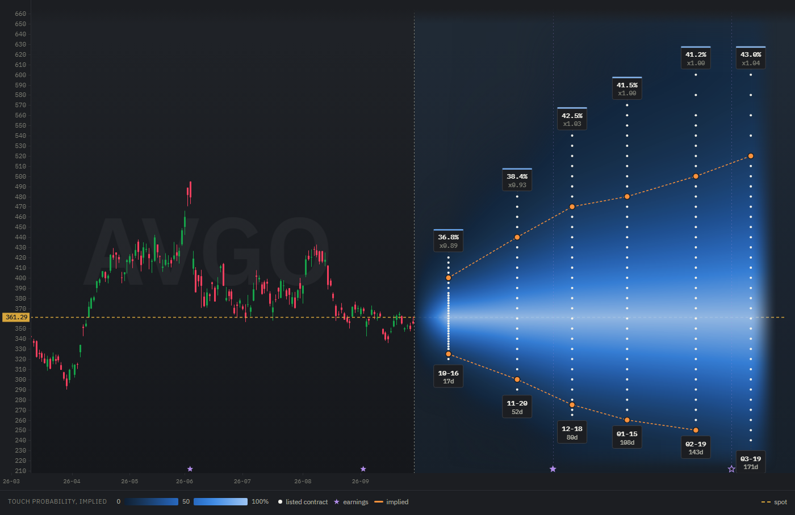

Free options probability calculator: the odds for every strike and expiry
OptionsCone turns the option chain of a stock into heatmaps on the price chart, so you don't have to enter strikes and dates one by one. For every listed strike of the weekly and monthly expiries up to about six months out, it shows how likely the stock is to touch the strike before expiry and to finish beyond it. All of it sits as one heatmap on the price chart, next to the candles, earnings dates and your own support lines.
Windows may show a warning when you install, as it does for many new apps. Click More info, then Run anyway.

Example: how likely was AVGO to reach 320?
On 29 September 2026 Broadcom (AVGO) traded at $361.29. Its next earnings report was due on 9 December, after the expiry in this example.
Take a guess before you read on: how likely was AVGO, according to its option prices, to trade at $320 at some point before the expiry on 20 November, 52 days later? And how likely was it to still be below $320 on that day?
Option prices put the chance of finishing below $320 at 21%, so a sold 320 put would have ended in the money about one time in five. The chance of touching $320 on the way was much higher, 41%, about twice as high. The table shows a few more strikes of the same expiry.
| AVGO, 20 November | Distance | Finishes beyond | Touches before expiry |
|---|---|---|---|
| 300 put | −17.0% | 11% | 22% |
| 320 put | −11.4% | 21% | 41% |
| 330 put | −8.7% | 27% | 54% |
| 400 call | +10.7% | 23% | 47% |
| 420 call | +16.3% | 15% | 30% |
Data: AVGO option chain, downloaded on 29 September 2026 at 10:44 New York time, quotes delayed about 15 minutes. Probabilities from option prices, calculated with OptionsCone. An illustration, not a recommendation.
Touch or expire: two different questions
The probability of expiring in the money answers what happens on expiration day. The probability of touch answers what can happen before it: whether the stock trades at the strike at any time on the way. A stock can fall through a strike and recover, so the touch probability is always the higher one, and in the AVGO table it is roughly twice as high at every strike.
Which one matters depends on the trade. A put seller who holds to expiry cares most about finishing in the money. Anyone with a stop, a roll rule or simply nerves cares about the touch, because that is when the position comes under pressure.

How to read it in OptionsCone
- Download the ticker during US trading hours. The chart fills with one column of dots per expiry, one dot per listed strike, calls above the price and puts below.
- Read the color as the probability of touching each strike: the stronger the color, the more likely the touch. In light mode it runs from pale to deep blue, in dark mode from dark to bright.
- Set the contour to expire or touch and pick a probability, for example 20%. The lines then mark, expiry by expiry, the strike with that probability below and above the price.
- Click any dot to open a box with the details of that contract: the strike, its distance from the price, the expiry and the days left, delta and gamma, its implied volatility, the touch and expire probability and the mid price. The box stays open while you switch the heatmap, for example to open interest or time value per day, and then shows those numbers for the same contract. Click the dot again or press Esc to close it.
- Draw your own levels with the horizontal line tool, for example a support level, and see how likely the stock is to reach it before each expiry.
The manual explains every control.
Delta is not the probability
Many traders use delta as a shortcut for the chance of expiring in the money and sell, for example, a 20-delta put expecting a 20% chance of assignment. For puts this understates the risk, for calls it overstates it, and the gap grows with implied volatility and with the time to expiry. How large the gap is depends on the stock. In the option chains of 12 October 2026, a 30-delta put on Apple came close to its delta. A 30-delta put on Bloom Energy, with about 72% implied volatility and five months to run, had a 48% chance of finishing in the money, 60% more than its delta suggests. OptionsCone works out the probability of every strike from its own option price, so you start with the probability itself instead of approximating it with delta.
The chance of finishing beyond the strike is also not quite the chance of a profitable trade. A seller keeps the premium, which gives the trade some room beyond the strike, and a buyer has to make up for it. The probability tells you how often the strike is reached, the premium tells you what that is worth.
Questions it answers
- How likely is my put to be assigned? The expire probability of its strike, at its expiry.
- Will the stock reach my stop or my target before a date? Draw the level and read the touch probability where it crosses each expiry.
- Which strike gives me a 15% chance at each expiry? Set the contour to 15%, the lines mark it across all expiries on the chart at once.
- Is an expiry with earnings priced differently? The stars on the date axis mark earnings, and the contour usually widens at the first expiry after a report.
Free and Pro
The free version shows the probabilities from option prices, plus implied volatility, open interest, volume, the bid-ask spread and the time value per day of every contract, each as its own heatmap. Open interest shows where other traders are positioned, volume and the bid-ask spread show how liquid a strike is and what it costs to trade, and the time value per day shows what a seller can earn each day. The probabilities describe what option prices assume, not what the stock will do.
OptionsCone Pro adds the stock's own realized odds next to them. 10y: industry-standard probability models, built on the stock's realized moves of the last ten years. Adaptive: the same models, adjusted to each stock's current conditions, the events ahead and how this particular stock typically responds to them. Where these odds and option prices disagree, an option can be priced richer or thinner than the stock's own moves support, which is where many traders look for an edge. The map shows it strike by strike.
FAQ
Is the options probability calculator free?
Yes. The free version of OptionsCone for Windows shows the probability of touching and of finishing beyond every listed strike of the weekly and monthly expiries up to about six months out, together with implied volatility, open interest, volume, spreads and time value. It needs no broker account.
What is the difference between the probability of touch and the probability of expiring in the money?
The probability of expiring in the money is the chance that the stock finishes beyond the strike on expiration day. The probability of touch is the chance that it trades at the strike at any time before. A stock can touch a strike and come back, so the touch probability is higher, often about twice as high.
Where do the probabilities come from?
In the free version they come from option prices, each strike from its own implied volatility. They show what option prices assume, not a forecast. How they are calculated is explained in the methods, and how often they came true on the accuracy page.
Try it on your own tickers for free
Download any US stock or ETF with listed options and see the odds for every strike and expiry in one picture.
Related
The probabilities in OptionsCone are estimates from option prices, not forecasts. Nothing on this page is a recommendation to buy or sell AVGO stock or options.